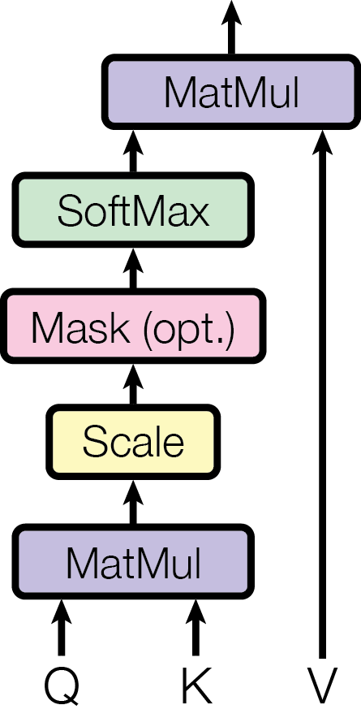
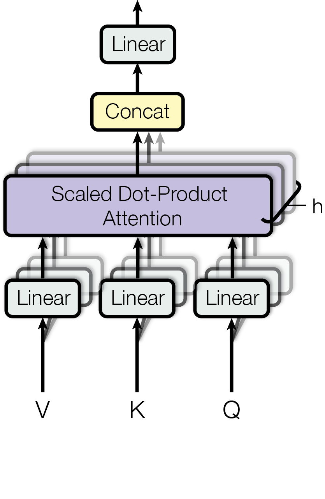

Attention Is All You Need
注意力就是你所需要的一切 —— 一篇把 RNN 整个换掉的论文
〇读之前：这篇论文到底解决了什么问题
要理解这件事，先看你熟悉的场景。
你那个 10 万参数的模型，任务是「给前 64 个字符，猜下一个字符」。它一次只能处理 64 个字符的窗口，而且是从左往右数过去的。这是循环神经网络（RNN）的工作方式：读第一个字，记住一点东西；读第二个字，把刚才记的和新的合起来；读第三个……
问题出在这个「合起来」上。 它像一个传话游戏：第 100 个字要从第 1 个字那里得到信息，中间得经过 99 次传递，每传一次就模糊一点。句子一长，开头的信息基本丢光了。
更要命的是没法并行。因为第 3 步必须等第 2 步算完，第 2 步必须等第 1 步。一块 GPU 上有几千个核心，可这条链子上永远只有一个核心在干活。
这篇论文的答案很干脆：把整条链子拆掉。 让第 1 个字和第 100 个字直接见面，中间不经过任何人。这样任意两个位置的距离都是 1 步，而且所有位置可以同时算。
每节开头有一个蓝色框，告诉你这节在解决什么问题。凡是第一次出现的专业词，都会在括号里给一句白话。书里第 X 章 这样的标记，是说你已经学过那块内容，可以直接调用。
原文里那种「序列转导」「相容性函数」「成分句法分析」的说法，我尽量换成了能听懂的表达。如果某个词非保留不可（比如 query、key、value），我会先给类比再给名字。
1摘要
主流的翻译模型都建立在循环神经网络（就是上面说的「一个字一个字读」那种）或卷积神经网络之上，结构上分两半：一半负责读懂原文（编码器），一半负责写出译文（解码器）。其中效果最好的模型，还会在两者之间加一个「注意力机制」来对齐原文和译文。
我们提出一个新架构，叫 Transformer。它完全建立在注意力机制上，一点循环、一点卷积都不用。
在两个机器翻译任务上的实验表明：质量更好，而且因为能大规模并行，训练时间大幅缩短。
- 英译德：28.4 BLEU，比此前最好的结果（包括把多个模型集成起来的那种）高出 2 个点以上。
- 英译法：41.8 BLEU，单模型新纪录。在 8 块 GPU 上训练 3.5 天——只有此前最好模型的零头。
一个给译文打分的指标，0 到 100。它比对机器译文和人参考译文里有多少词组重合。粗略感受：25 分左右能看懂大意但明显生硬，30 分以上相当通顺，40 分以上接近专业译者。不用记公式，记这个量级就够。
最后他们还把模型用到了另一类任务（分析句子的语法结构）上，数据多和少都表现不错，说明这东西不是只能翻译。
2为什么原来的方法不行
循环网络的工作方式是把计算沿着序列位置一步步展开：维护一个「隐藏状态」 ht，每一步用上一步的 ht-1 和当前输入算出新的 ht。
这个「固有的顺序性」导致一个训练样本内部无法并行。序列越长越致命：因为显存有限，你没法靠加大批处理（一次塞更多句子）来弥补。
有人试过用「分解技巧」和「条件计算」来提效，但这些只是让每步算得快一点，那条串行的链子还在。
注意力机制此前已经被广泛使用，它有个好处：计算两个位置的关联时，不用管它们在句子里隔多远。但除了极少数尝试，注意力都是搭配循环网络用的——链子仍然存在。
这篇论文的做法是：把循环整个扔掉，只留注意力。让「关注谁」这件事直接由注意力机制完成，不需要先顺序读完再回头找。
结果是：能并行的程度大幅提高，8 块 P100 训练 12 小时就达到当时最好的翻译质量。
3模型长什么样

先认三个词，这张图就通了：
- 编码器（encoder）：把输入的句子读成一组向量。左边那摞。
- 解码器（decoder）：根据编码器的结果，一个词一个词地写出译文。右边那摞。
- 自回归（auto-regressive）：写译文时，每写一个词，就把它接到已写内容的后面，再猜下一个。和你那个字符级模型一模一样。
「非自回归」不等于「整个系统不顺序」。训练时，因为标准答案已知，解码器可以一次性并行处理整句译文；推理时（真的要它翻译时），还是得一个词一个词往外蹦，因为下一个词的输入就是上一个词的输出。速度提升主要来自训练，以及编码器那半边完全并行。
整体流程是这样的：编码器把输入序列 (x1, …, xn) 变成一组连续向量 z = (z1, …, zn)；解码器拿到 z，逐个生成输出 (y1, …, ym)。
3.1编码器和解码器里各有什么
编码器由 6 个完全相同的层叠起来。每一层里有两个子层：
- 多头自注意力（下一节细讲）
- 逐位置前馈网络——就是一个普通的两层全连接，对每个位置单独做一遍
每个子层外面套了一个残差连接，后面接层归一化。写成式子就是：
那个
x + 是残差连接：让梯度有一条直通的短路可以走，深层网络才训得动。这个你书里第 8 章讲「残差 + LayerNorm」时会更细，现在只要知道：它俩是让 6 层能训起来的前提，不是可选项。
为了让残差能相加，所有子层以及嵌入层的输出维度统一是 dmodel = 512。
解码器也是 6 层，但每层有三个子层——比编码器多一个：
- 带掩码的自注意力（只能看已经写出的部分）
- 编码器-解码器注意力：查询来自解码器自己，键和值来自编码器的输出
- 逐位置前馈网络
训练时整句译文是一次性喂进去的，但模型不该偷看后面的词——否则就是抄答案。所以要把「当前位置之后」的所有位置屏蔽掉：在 softmax 之前把那些位置的分数设成 −∞，softmax 之后它们的权重就变成 0。
「输出嵌入偏移一个位置」是配套操作：位置 i 的预测只能依赖位置小于 i 的已知输出。
4注意力到底是什么
先给一个不带公式的描述：
注意力函数把一个 query（查询）和一组 key-value（键-值）对，映射成一个输出。输出是值的加权和，而每个值分到多少权重，由 query 和对应 key 之间的「相容性」算出来。
「相容性」这个词很绕。换成日常语言：
你要在图书馆找一本讲「注意力机制」的书。
- Query（查询）= 你的需求：「我要找讲注意力机制的书」
- Key（键）= 每本书书脊上的标签：「机器学习」「烹饪」「天文学」
- Value（值）= 书的实际内容
你拿自己的需求和每个标签比对，算出相关度：机器学习 0.8、天文学 0.05、烹饪 0.01。归一化之后，你按这个比例把几本书的内容「混合」起来读。
注意：你真正读的只有 value。query 和 key 的唯一作用是算那个比例。 这一点想通了，注意力就不再神秘。
4.1缩放点积注意力（式 1）

输入的 query 和 key 是 dk 维的，value 是 dv 维的。实际操作时不会一个一个算，而是把所有 query 摞成一个矩阵 Q，key 摞成 K，value 摞成 V：
①
QKT：每个 query 和每个 key 做内积。内积就是相似度——书里第 2 章讲过，两个向量方向越一致，内积越大。结果是一个「谁和谁多像」的方阵。②
/ √dk：把分数压小一点，防止 softmax 变得过于极端（下一小节解释）。③
softmax(...)：按行归一化，让每一行的权重加起来等于 1。softmax 怎么算、为什么减 max，书里第 2 章有。④
· V：用这些权重去加权平均 value。这一步才是真正在「搬运信息」，前面三步都只是在算比例。
注意式 1 里只有三样运算：矩阵乘、除以一个数、softmax。这三样你在第 2 章全用过。区别只是这里的矩阵是三维的（batch × 位置 × 维度），要搞清楚在哪个 axis 上做 softmax——永远在最后一维，因为那是「给所有候选打分」的方向。
4.2为什么要除以 √dk
这是全篇最容易被跳过、但也最该自己算一遍的地方。
先设想 q 和 k 的每个分量都是均值为 0、方差为 1 的独立随机数。它们的点积是 dk 个乘积之和：
所以标准差是 √dk。dk = 64 时，分数波动的典型幅度约 ±8；dk = 512 时，约 ±23。
分数一旦拉得很大，softmax 就会变成「一家独大」：最大的那个接近 1，其余接近 0。而此时 softmax 的梯度也接近 0——参数几乎收不到「该往哪调」的信号，训练就卡住了。
书里第 6 章那张表里，未缩放时 dk 从 4 涨到 512，最大权重从 0.31 一路涨到 0.91，熵从 2.70 掉到 0.22——分布越来越尖。缩放之后，最大权重稳定在 0.10 附近，熵稳定在 3.7。这就是「除以 √dk」的全部作用。
除以 √dk 之后，方差从 dk 变回 1，和 dk 无关了。
4.3为什么用点积，不用加性注意力
当时有两种主流做法：加性注意力（用一个单隐藏层的小网络算兼容性）和点积注意力（直接算内积）。
两者理论复杂度相近，但点积快得多——因为矩阵乘法有高度优化的实现（就是你调 a @ b 时 GPU 跑的那套东西）。
dk 小的时候两者表现差不多；dk 大了之后，不缩放的点积会变差，原因就是上面说的方差问题。加一个 √dk 就抹平了这个差距，于是点积的「快」就白赚了。
5多头注意力

如果只做一次注意力（用 512 维直接算），模型会被迫把所有关系「平均」到同一组权重里。问题是句子里的关系不止一种：
- 这个代词指的是前面哪个名词？
- 这个动词的主语在哪？
- 这两个词是不是固定搭配？
平均会把它们搅在一起。 论文的说法是「averaging inhibits this」。
多头注意力的做法：把 512 维拆成 8 份，每份 64 维，每一份独立做一次注意力，最后拼回去。
其中 headi = Attention(Q WiQ, K WiK, V WiV) 翻译成人话：
① 对第 i 个头，先用一个可学习的矩阵 Wi 把 Q、K、V 各自投影到 64 维（相当于换一个「看问题的角度」）；
② 在这个低维空间里做一次普通的注意力；
③ 8 个头的结果拼成 512 维，再过一次线性层 WO 融合。
关键：8 个头各自有独立的 Wi，所以它们会学到不同的关注模式。这不是超参数调出来的，是训练自己分化出来的。
参数量上还有个巧合：8 个头各 64 维，总计算量和 1 个头用满 512 维差不多。所以多头不是靠「算得更多」换效果，而是靠「分工」。
输入 (batch, 位置, 512) → 投影后拆成 8 份 → (batch, 8, 位置, 64) → 每个头算注意力 → 拼回 (batch, 位置, 512)。
中间为什么要 transpose 再 contiguous？因为 PyTorch 里 view 要求内存连续。书里第 7 章有九步维度表，那节就是为这件事写的。
5.1三种用法
同一个多头注意力，在模型里被用在三个地方，区别只在Q、K、V 从哪来：
| 用在哪 | Q 来自 | K、V 来自 | 作用 |
|---|---|---|---|
| 编码器自注意力 | 上一层输出 | 上一层输出 | 让原文内部互相对齐 |
| 解码器自注意力 | 上一层输出 | 上一层输出（带掩码） | 让译文已写部分互相对齐 |
| 编码器-解码器注意力 | 解码器上一层 | 编码器的输出 | 写每个词时回看原文 |
第三种是传统「翻译模型」里那个注意力的位置：解码器在写第 i 个词时，会问「原文里哪部分跟我现在写的有关」。
看 K 和 V 是不是来自编码器：是，就是「看原文」；不是，就是「看自己」。自注意力的「自」，指的就是 Q、K、V 同源。
6剩下的三个零件
6.1逐位置前馈网络（式 2）
每个编码器/解码器层里，注意力后面还跟着一个普通的两层全连接：
max(0, …) 就是 ReLU。书里第 4 章讲过它为什么重要：没有它，多层线性叠加等于一层。
「逐位置」（position-wise）的意思是：对每个位置单独做，位置之间不交流。第 3 个词和第 5 个词用的是同一组 W1、W2，但各算各的。
注意力本质上是一次加权平均——加权平均是线性的。如果整个模型只有注意力和线性层，那堆再多层也等价于一层（就是你书里 4.1 节那个 W₂(W₁x) = Wx）。
整个 Transformer 的「弯折能力」只有两处来源：这里的 ReLU，和注意力里的 softmax。 把这两处换掉，深度立刻失去意义。
论文提到另一个理解角度：这等价于两个卷积核大小为 1 的卷积。听不懂没关系——它的意思只是「每次只看一个位置、不做跨位置混合」。
6.2嵌入与权重共享
词是离散的符号（"猫"、"cat"），模型要的是向量。所以需要一个嵌入矩阵：一行一个词，把词 ID 查成 512 维向量。
你书里第 1 章算过这个矩阵的参数量：词表大小 × 维度。这里如果是 37000 个词元 × 512 维，就是 1894 万参数——占了整个模型很大一块。
论文做了一件省钱的事：三个地方共用同一个权重矩阵——输入嵌入、输出嵌入、以及 softmax 之前那个线性层。
因为这三件事在数学上是同一件事的不同方向：把词变成向量、把向量变回词、给每个词打分。共用一个矩阵相当于说「用同一把尺子量两个方向」，实践中效果不掉，参数省了一大块。
另外嵌入向量要乘上 √dmodel（这里是 √512 ≈ 22.6）。原因和式 1 除以 √dk 是一对：让嵌入的数值量级和位置编码匹配，两者相加时不会一方压过另一方。
6.3位置编码
这是全篇最需要动一下脑子的地方。
注意力做的是「每个位置对所有位置算内积，再加权求和」。这个操作完全不关心顺序：把输入句子的词序打乱，输出只是跟着换个位置，内容一模一样。
但语言是有顺序的：「我打你」和「你打我」意思完全相反，可对注意力来说这两句的词袋一样。
所以必须额外注入位置信息。
做法：给每个位置算一个 512 维的向量，直接加到嵌入向量上（不是拼接）。
PE(pos, 2i+1) = cos( pos / 100002i/dmodel ) 翻译成人话：位置编码的第 0、2、4… 维（偶数维）用 sin，第 1、3、5… 维（奇数维）用 cos。
分母
100002i/d 让每一维的频率不同：i 小的维度变化快（波长短），i 大的维度变化慢（波长长）。波长从 2π 一路排到 10000·2π，构成等比数列。
想象你在给每个位置打指纹：用 256 个不同速度的钟表指针，记录它们此刻的角度。位置 0 时全部指向 0；位置 5 时短针转了几圈、长针只转了一点。这组角度组合就是位置的唯一指纹，而且相邻位置的指纹是渐变的，不是突然跳变。
这比直接用 1, 2, 3… 当位置编号好在哪？因为数字大小会污染向量的量级——位置 5000 得是个 5000 维的怪东西。而 sin/cos 永远在 [−1, 1] 之间，安全。
还有一个更关键的好处：对固定的偏移量 k，PE(pos+k) 可以表示成 PE(pos) 的线性函数。这意味着模型只要学一个线性变换，就能学会「往前看 3 个词」这种相对位置关系。
论文也试过让位置编码跟着训练（可学习的位置嵌入），结果几乎一样（表 3 的 (E) 行）。选正弦版的原因是：它可能让模型外推到比训练时更长的序列。
论文用的词是 "may allow"，全文没有给任何外推实验。从公式看，位置 10000 的编码仍然算得出来，但模型有没有学会用它，是另一回事。书里第 10 章把这条列进了「论文没讲清楚的地方」。
7为什么自注意力更好
比较三个东西：
- 每层算多少（计算复杂度）
- 能并行多少（最少需要几步顺序操作）
- 信息要传多远（任意两个位置之间最长路径）
第三点最容易被忽略，但它才是关键：路径越短，学长距离依赖越容易，因为梯度不用穿过一大堆中间步骤（想想传话游戏）。
| 层类型 | 每层复杂度 | 顺序操作数 | 最大路径长度 |
|---|---|---|---|
| 自注意力 | O(n² · d) | O(1) | O(1) |
| 循环（RNN） | O(n · d²) | O(n) | O(n) |
| 卷积 | O(k · n · d²) | O(1) | O(logk n) |
| 自注意力（限制窗口 r） | O(r · n · d) | O(1) | O(n/r) |
n 是序列长度，d 是表示维度，k 是卷积核大小。
看表格里的四个值，抓住三点：
- 顺序操作数：自注意力是 O(1)——所有位置同时算。RNN 是 O(n)——多长就得串多久。这是并行能力的直接体现。
- 最大路径长度：自注意力是 O(1)——任意两个位置一步直达。RNN 是 O(n)——隔多远就要传多少步。
- 代价：自注意力是 O(n²·d)，序列长度翻倍，计算量翻四倍。这是它唯一的软肋。
论文说：当 n < d 时，自注意力比 RNN 快。因为
O(n²·d) < O(n·d²) ⟺ n < d
机器翻译里句子通常是几十个词元（n ≈ 50），而 d = 512，条件满足。但序列变长就反过来了——这也是后来一堆「长文本 Transformer」工作要解决的问题（滑动窗口、稀疏注意力、线性注意力都是在压这个 n²）。
卷积层的问题不同：单个卷积核只看得到 k 个邻居，要把距离 n 的两点连起来，得叠 O(n/k) 层（连续卷积）或 O(logk n) 层（空洞卷积）。路径也就跟着变长。
8怎么训练的
8.1数据和批处理
- 英德：WMT 2014，约 450 万句对，共享词表 37000 个词元（BPE 编码）
- 英法：WMT 2014，3600 万句对，32000 个词元（word-piece）
BPE / word-piece 是什么：不按整词切，也不按单字母切，而是切在中间——常见词保留整词，罕见词拆成几个片段。比如 "unbelievable" 可能是 "un" + "believ" + "able"。这样词表不用太大，也不会出现「没见过这个词」。
批处理按长度相近的句子放一起，每批约 25000 个源词元 + 25000 个目标词元。
8.2硬件与耗时
| 模型 | 每步耗时 | 总步数 | 总时长 |
|---|---|---|---|
| base | 0.4 秒 | 100,000 | 12 小时 |
| big | 1.0 秒 | 300,000 | 3.5 天 |
机器是 8 块 NVIDIA P100。
你那张 RTX 5060 Laptop（8 GB）。P100 是 2016 年的数据中心卡，单精度算力约 9.5 TFLOPS，你那张显卡在 FP32 上大约 15–20 TFLOPS。单卡算力其实不差，差距在：显存只有 8 GB（P100 是 16 GB），以及批量规模。
把 base 模型（6500 万参数）缩小到能在 8 GB 上跑，是可行的；想原样复现 "8 块 P100 训 12 小时"，不现实。
8.3学习率：warmup（式 3）
那个
min 就是在两个曲线里取小的：左边那条是「下降」，右边那条是「爬升」，交点正好在 warmup 结束处。
刚开始训练时参数是随机的，梯度方向很不靠谱。如果一上来就用大学习率，一次更新就能把参数推到很远的地方，之后再怎么调都回不来——直接发散。
先让学习率从小慢慢涨上去，等模型「大概知道该往哪走」了，再用正常学习率。这个技巧后来成了 Transformer 系模型的标配。
8.4三种正则化
- 残差 Dropout（P = 0.1）：每个子层的输出在「加回输入之前」随机丢一部分。对嵌入 + 位置编码的和也做。
- 标签平滑（ε = 0.1）：不要求模型对答案 100% 确信，而是把目标概率压成「正确类 0.9，其余平分 0.1」。论文直说这会让困惑度变差（因为模型不再笃定），但准确率和 BLEU 反而更高。
- 训练/推理差异：dropout 只在训练时开，推理时关。
这是全篇一个反直觉但重要的观察：「模型更不确定」和「模型更准」可以同时发生。
困惑度衡量的是「模型有多确信」，BLEU 衡量的是「选出来的词对不对」。标签平滑牺牲前者换后者——说明过度自信本身就是一种过拟合。这个观点后来在很多地方被重复验证。
9结果
9.1翻译质量
| 模型 | 英德 BLEU | 英法 BLEU | 训练成本 (FLOPs) |
|---|---|---|---|
| ConvS2S（此前最好单模型） | 25.16 | 40.46 | 9.6×10¹⁸ |
| ConvS2S 集成 | 26.36 | 41.29 | 7.7×10¹⁹ |
| Transformer（base） | 27.3 | 38.1 | 3.3×10¹⁸ |
| Transformer（big） | 28.4 | 41.8 | 2.3×10¹⁹ |
最值得看的是训练成本那一列：base 模型的成本是 ConvS2S 的三分之一，却比它高出 2 个 BLEU；big 模型打败了所有集成模型，成本还低一个数量级。
集成（ensemble）指把多个模型的输出合起来投票——通常能白赚一两个点，代价是几倍的推理成本。Transformer 单模型打赢集成，这件事当时相当有冲击力。
9.2拆零件：消融实验
做法是每次只改一个地方，看开发集上的 PPL 和 BLEU 怎么变。这是判断「哪个零件真的有用」的标准方法。
| 改动 | PPL | BLEU | 说明 |
|---|---|---|---|
| base（基准） | 4.92 | 25.8 | 8 头，每头 64 维 |
| 改成 1 个头 | 5.29 | 24.9 | 掉 0.9 分，多头确实有用 |
| 改成 32 个头 | 5.01 | 25.4 | 头太多也变差 |
| 把 dk 砍到 16 | 5.16 | 25.1 | 判断相似度的空间太小 |
| 层数 2 层 | 6.11 | 23.7 | 深度很重要 |
| 层数 8 层 | 4.88 | 25.5 | 比 6 层略好，但没明显收益 |
| dmodel 加到 1024 | 4.66 | 26.0 | 加宽有效，但参数翻了 2.6 倍 |
| 去掉 dropout | 5.77 | 24.6 | 明显过拟合 |
| 位置编码换成可学习的 | 4.92 | 25.7 | 几乎一样 |
1. 别只看 BLEU 的绝对值。 25.8 和 25.4 差 0.4，在开发集上可能就是噪声。但 1 头 vs 8 头差 0.9，方向明确。
2. (E) 行值得多想一层。 位置编码换成可学习的，结果几乎完全一样（4.92 / 25.7 vs 4.92 / 25.8）。但论文正文说选正弦版是因为「可能外推到更长序列」——而这张表恰恰说明，两种做法在训练长度上没差别，外推能力也没测。
3. 「加宽有效」不等于「值得」。 dmodel 从 512 到 1024，BLEU 涨 0.2，参数量从 65M 涨到 168M。
9.3换个任务：句法分析
他们还把模型用在了英语成分句法分析（constituency parsing）上——就是给句子标出「哪个词和哪个词组成一个短语，这个短语又和谁组成更大的成分」，本质是输出一棵树。
结果：在数据充足和只有半监督数据两种情况下都表现良好，说明 Transformer 学到的是通用的序列建模能力，不是只对翻译有效。
10结论
论文的收尾很简洁，三个要点：
- Transformer 是第一个完全靠注意力做序列转换的模型，把编码器和解码器里的循环层换成了多头自注意力。
- 翻译任务上训练快得多，而且质量达到了新的最好水平。
- 他们期待注意力模型在其他模态（图像、音频、视频）上也能用，并计划研究「受限自注意力」来处理超长序列和大批量。
「我们计划研究受限自注意力以高效处理大输入和大输出」——这句话在之后的几年被反复兑现。BERT、GPT 系列全部建立在 Transformer 上；而「受限自注意力」这条路，长出了 Longformer、BigBird、滑动窗口注意力等等一整个方向。
一篇论文的价值，有时不看它解决了什么，而看它开了多少扇门。
附术语对照：原文说法 → 白话
| 原文用的词 | 什么意思 | 你书里的对应 |
|---|---|---|
| sequence transduction | 把一个序列变成另一个序列（翻译、摘要都是） | 第 5 章 |
| encoder / decoder | 读原文的那一半 / 写译文的那一半 | 第 9 章 |
| query / key / value | 我在找什么 / 我是什么标签 / 我实际的内容 | 第 6 章 |
| compatibility function | 算 query 和 key 有多配的方法（这里用内积） | 第 2 章内积 |
| self-attention | Q、K、V 来自同一个地方 | 第 6 章 |
| multi-head | 分组做多次注意力，各组学不同的关系 | 第 7 章 |
| position-wise | 对每个位置单独做，位置间不交流 | 第 8 章 FFN |
| residual connection | 输出 = 子层结果 + 输入本身 | 第 8 章 |
| layer normalization | 对同一位置的所有维度做归一化 | 第 8 章 |
| auto-regressive | 每写一个词就接回去，再猜下一个 | 第 5 章 |
| teacher forcing | 训练时喂标准答案而不是模型自己的输出 | 第 5 章 |
| label smoothing | 不要求 100% 确信，故意留一点不确定性 | 第 3 章交叉熵 |
| warmup | 学习率先慢慢涨上去再降 | 第 8 章 |
| beam search | 不只保留一个最好的词，保留 k 条候选路径 | — |
| BLEU | 译文和人参考译文的重合度打分，0–100 | — |
| perplexity (PPL) | 模型平均在几个词之间犹豫 | 第 5 章 |
| BPE / word-piece | 按出现频率把词切成片段，不切到字母 | — |
| ablation | 每次只拆一个零件，看性能掉多少 | 第 10 章 |
附读完之后，你应该能回答的六个问题
- 为什么 RNN 不能并行？（因为 ht 依赖 ht-1，链子上一步没完下一步开不了工）
- 式 1 里 Q、K 的产物是什么？谁被真正搬运？（产物是权重矩阵；被搬运的只有 V）
- 为什么除以 √dk？（点积方差是 dk，标准差是 √dk；不除会让 softmax 饱和，梯度趋零）
- 多头比单头强在哪？（不同头学不同的关注模式，避免被平均掉；总计算量几乎不变）
- 为什么需要位置编码？（注意力不看顺序，打乱词序输出只是跟着换位，内容不变）
- 自注意力最大的代价是什么？（O(n²·d)，序列翻倍计算量翻四倍；RNN 是线性的）
原文：Vaswani et al., Attention Is All You Need, NIPS 2017 · arXiv:1706.03762
配图来自原文。术语若与书里不一致，以书里的为准。